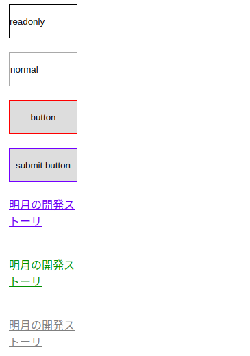

こんにちは。明月です。
CSSの選択子で一番良く使う選択子はタグによって、「id」によって(#id)、「class」によって(.class)が一番良く使う選択子で次がこの属性選択子ではないかと思います。
Htmlタグではタグ名があるし、タグテキストがあります。そして属性(アトリビュート)がありますね。
<!-- タグ名は「input」、属性は「type」、「id」、「value」です。 -->
<input type="text" id="test" value="100%">
CSS側で上の属性によって選択しましょう。
<!DOCTYPE">
<HTML>
<HEAD>
<TITLE> New Document </TITLE>
<style>
input,a{
width: 100px;
height: 50px;
margin:10px;
}
</style>
</HEAD>
<BODY>
<input type="textbox" readonly="readonly" value="readonly"><br />
<input type="textbox" value="normal"><br />
<input type="button" value="button"><br />
<input type="submit" value="submit button"><br />
<a href="http://www.nowonbun.com" style="display:block;">明月の開発ストーリ</a><br />
<a href="https://www.nowonbun.com" style="display:block;">明月の開発ストーリ</a><br />
<a href="http://localhost" style="display:block;">明月の開発ストーリ</a><br />
</BODY>
</HTML>
上の例は全て「input」タグが４つ、「a」タグが３つがありますね。
CSSｍｐ属性選択子で選択してスタイルを付けましょう。
/*inputタグでreadonly属性がある要素*/
input[readonly]{
border:1px solid #000;
}
/*inputタグでtypeの属性がbuttonの要素*/
input[type="button"]{
border:1px solid red;
}
/*inputタグでvalueの属性がsubmitの文字で含めている要素*/
input[value~="submit"]{
border:1px solid blue;
}
/*inputタグでhrefの属性がhttpsで始まる要素*/
a[href^="https"]{
color:green;
}
/*inputタグでhrefの属性がlocalhostで終わる要素*/
a[href$="localhost"]{
color:gray;
}
上の例をみればBodyの中でタグは全て７つがあります。inputタグは４つで、aタグが３つがあります。
属性選択子はブランケット([])で選択します。
上の通りで一番上のテキストボックスは枠が黒くなりますね。
２つ目のスタイルはボタンタイプのinputタグの枠が赤になります。
３つ目はvalue属性、つまり、値がsubmitを含めているボタンは枠が青になります。
４つ目はhrefの属性が「https」で始まる「a」タグの文字が緑になります。
５つ目はhrefの属性が「localhost」で終わる「a」タグの文字がグレーになります。

属性選択子はCSS Selectorの中で良く使う選択子です。
- [CSS] 位置(position),表示(display)スタイル2019/12/13 20:08:50
- [CSS] border(枠)、余白スタイル - border, margin, padding2019/12/12 20:16:43
- [CSS] 文字スタイル2019/12/11 21:13:22
- [CSS] その他の疑似選択子 - link, visited, target, enabled, disabled, not, active, hover, focus2019/12/10 07:31:28
- [CSS] 疑似要素選択子 - fist-line, first-letter, before, after2019/12/09 07:28:27
- [CSS] 範囲と指定に関する選択子(全体選択子、要素選択子、孫選択子、子選択子、隣接選択子)2019/12/06 07:27:36
- [CSS] 疑似クラス - only-child, only-of-type, empty, empty, root2019/12/05 07:29:15
- [CSS] 疑似クラス - first-child, last-child, first-of-type, last-of-type2019/12/04 07:28:37
- [CSS] 疑似クラス - nth-child, nth-of-type, nth-last-child, nth-last-of-type2019/12/03 07:21:20
- [CSS] 属性選択子2019/12/02 07:32:37
- [CSS] Selector(選択子)2019/11/28 07:28:03
- [CSS] CSS Stylesとは？2019/11/27 07:30:30
- [HTML] Open graph(ogタグ)2019/11/26 07:42:20
- [HTML] Metaタグに関して(SEO最適化)2019/11/25 20:16:18
- [HTML] HTMLタグ構造2019/11/22 19:49:41
最新投稿
- [Design pattern] 1-4. デザインパターンの抽象ファクトリーパターン(Abstract factory pattern)2021/10/15 19:31:03
- [Project design] 要件定義(要求事項整理)2021/10/15 19:28:58
- [C#] 52. Reflection機能を使い方 - Variable2021/10/15 19:27:37
- [Project design] プロジェクトを工程(ウォーターフォール vs アジャイル)2021/10/14 18:36:04
- [C#] 51. Reflection機能を使い方 - Method2021/10/14 18:34:21
- [C#] 50. Reflection機能を使い方 - Class2021/10/13 18:34:13
- [C#] 49. Operator(演算子)のオーバーロードを使い方2021/10/12 18:28:42
- [C#] 48. IEnumerableとIEnumerator、そしてyieldキーワード2021/10/11 19:49:33
- [C#] 47. Nugetを使い方(外部ライブラリ)とデータベース(MariaDB(Mysql))を使い方、そしてトランザクション(Transaction)2021/10/08 18:58:57
- [Window] MariaDBをインストールする方法2021/10/08 18:56:05
- [C#] 46. データベース(MSSQL)に接続する方法2021/10/07 18:39:58
- [C#] 45. ネットワークソケット通信(Socket)を使い方2021/10/06 19:06:25
- [C#] 44. ファイル(FileInfo)とディレクトリ(DirectoryInfo)を扱い2021/10/05 19:29:34
- [C#] 43. ストリーム(Stream)とバイナリ(byte[])、エンコード(Encoding)、そしてusingを使い方とIDisposableインターフェース2021/10/04 18:33:04
- [C#] 42. ファイルを扱い(IO)とファイルメタデータ(FileInfo)を使い方2021/10/01 20:10:21